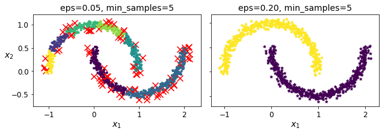
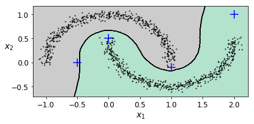
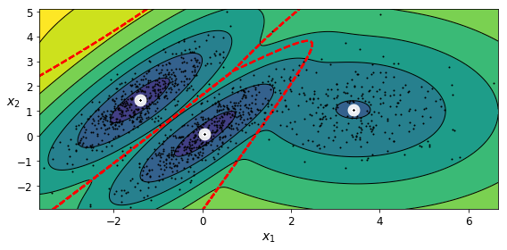
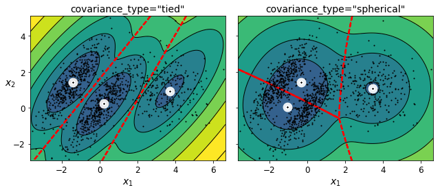
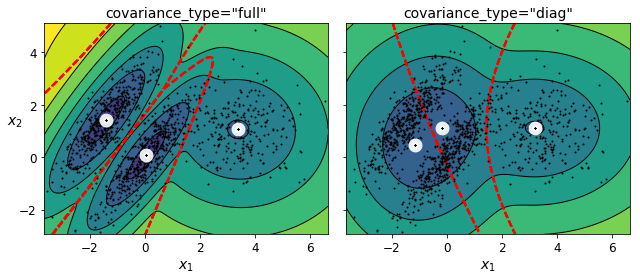
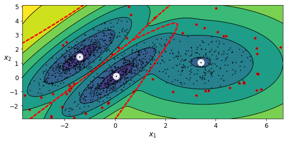
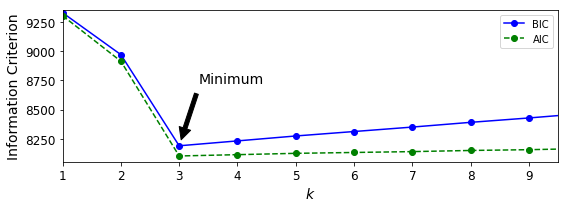
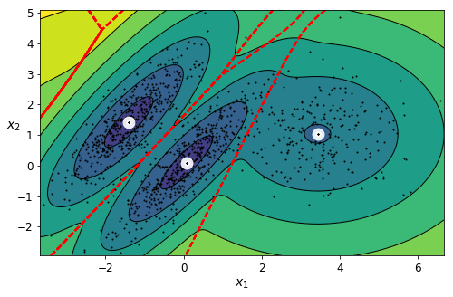
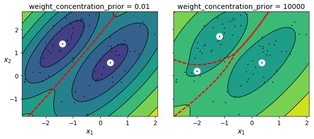
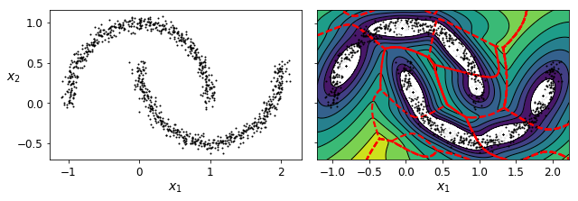

Unsupervised learning (2)#
All credits to Aurelien Geron, adapted from his book “Hands-on Machine Learning”
Setup#
First, let’s import a few common modules, ensure MatplotLib plots figures inline and prepare a function to save the figures. We also check that Python 3.5 or later is installed (although Python 2.x may work, it is deprecated so we strongly recommend you use Python 3 instead), as well as Scikit-Learn ≥0.20.
# Python ≥3.5 is required
import sys
assert sys.version_info >= (3, 5)
# Scikit-Learn ≥0.20 is required
import sklearn
assert sklearn.__version__ >= "0.20"
# Common imports
import numpy as np
import os
# to make this notebook's output stable across runs
np.random.seed(42)
# To plot pretty figures
%matplotlib inline
import matplotlib as mpl
import matplotlib.pyplot as plt
mpl.rc('axes', labelsize=14)
mpl.rc('xtick', labelsize=12)
mpl.rc('ytick', labelsize=12)
def image_path(fig_id):
return "images/"+fig_id
def save_fig(fig_id, tight_layout=True):
print("Saving figure", fig_id)
if tight_layout:
plt.tight_layout()
plt.savefig(image_path(fig_id) + ".png", format='png', dpi=300)
## this is copied from the previous notebook
def plot_data(X):
plt.plot(X[:, 0], X[:, 1], 'k.', markersize=2)
def plot_centroids(centroids, weights=None, circle_color='w', cross_color='k'):
if weights is not None:
centroids = centroids[weights > weights.max() / 10]
plt.scatter(centroids[:, 0], centroids[:, 1],
marker='o', s=35, linewidths=8,
color=circle_color, zorder=10, alpha=0.9)
plt.scatter(centroids[:, 0], centroids[:, 1],
marker='x', s=2, linewidths=12,
color=cross_color, zorder=11, alpha=1)
## create a meshgrid, predict each instance, color according to label!
def plot_decision_boundaries(clusterer, X, resolution=1000, show_centroids=True,
show_xlabels=True, show_ylabels=True):
mins = X.min(axis=0) - 0.1
maxs = X.max(axis=0) + 0.1
xx, yy = np.meshgrid(np.linspace(mins[0], maxs[0], resolution),
np.linspace(mins[1], maxs[1], resolution))
Z = clusterer.predict(np.c_[xx.ravel(), yy.ravel()])
Z = Z.reshape(xx.shape)
plt.contourf(Z, extent=(mins[0], maxs[0], mins[1], maxs[1]),
cmap="Pastel2")
plt.contour(Z, extent=(mins[0], maxs[0], mins[1], maxs[1]),
linewidths=1, colors='k')
plot_data(X)
if show_centroids:
plot_centroids(clusterer.cluster_centers_)
if show_xlabels:
plt.xlabel("$x_1$", fontsize=14)
else:
plt.tick_params(labelbottom=False)
if show_ylabels:
plt.ylabel("$x_2$", fontsize=14, rotation=0)
else:
plt.tick_params(labelleft=False)
DBSCAN#
from sklearn.datasets import make_moons
X, y = make_moons(n_samples=1000, noise=0.05, random_state=42)
from sklearn.cluster import DBSCAN
dbscan = DBSCAN(eps=0.05, min_samples=5)
dbscan.fit(X)
DBSCAN(algorithm='auto', eps=0.05, leaf_size=30, metric='euclidean',
metric_params=None, min_samples=5, n_jobs=None, p=None)
dbscan.labels_[:10]
array([ 0, 2, -1, -1, 1, 0, 0, 0, 2, 5])
len(dbscan.core_sample_indices_) ## note there are > 800 core samples!
808
dbscan.core_sample_indices_[:10]
array([ 0, 4, 5, 6, 7, 8, 10, 11, 12, 13])
dbscan.components_[:3] ## these are the instances corresponding to the core samples
array([[-0.02137124, 0.40618608],
[-0.84192557, 0.53058695],
[ 0.58930337, -0.32137599]])
Note there are 7 clusters. The label -1 corresponds to outliers
np.unique(dbscan.labels_)
array([-1, 0, 1, 2, 3, 4, 5, 6])
dbscan2 = DBSCAN(eps=0.2)
dbscan2.fit(X)
DBSCAN(algorithm='auto', eps=0.2, leaf_size=30, metric='euclidean',
metric_params=None, min_samples=5, n_jobs=None, p=None)
def plot_dbscan(dbscan, X, show_xlabels=True, show_ylabels=True):
core_mask = np.zeros_like(dbscan.labels_, dtype=bool)
core_mask[dbscan.core_sample_indices_] = True
anomalies_mask = dbscan.labels_ == -1
non_core_mask = ~(core_mask | anomalies_mask)
cores = dbscan.components_
anomalies = X[anomalies_mask]
non_cores = X[non_core_mask]
plt.scatter(cores[:, 0], cores[:, 1], marker='*', s=20, c=dbscan.labels_[core_mask])
plt.scatter(anomalies[:, 0], anomalies[:, 1],
c="r", marker="x", s=100)
plt.scatter(non_cores[:, 0], non_cores[:, 1], c=dbscan.labels_[non_core_mask], marker=".")
if show_xlabels:
plt.xlabel("$x_1$", fontsize=14)
else:
plt.tick_params(labelbottom=False)
if show_ylabels:
plt.ylabel("$x_2$", fontsize=14, rotation=0)
else:
plt.tick_params(labelleft=False)
plt.title("eps={:.2f}, min_samples={}".format(dbscan.eps, dbscan.min_samples), fontsize=14)
plt.figure(figsize=(9, 3.2))
plt.subplot(121)
plot_dbscan(dbscan, X)
plt.subplot(122)
plot_dbscan(dbscan2, X, show_ylabels=False)
save_fig("dbscan_plot")
plt.show()
Saving figure dbscan_plot

dbscan = dbscan2
Build a classifier to classify other instances
from sklearn.neighbors import KNeighborsClassifier
knn = KNeighborsClassifier(n_neighbors=50)
knn.fit(dbscan.components_, dbscan.labels_[dbscan.core_sample_indices_]) ## train using core instances and labels!
KNeighborsClassifier(algorithm='auto', leaf_size=30, metric='minkowski',
metric_params=None, n_jobs=None, n_neighbors=50, p=2,
weights='uniform')
X_new = np.array([[-0.5, 0], [0, 0.5], [1, -0.1], [2, 1]])
knn.predict(X_new)
array([1, 0, 1, 0])
knn.predict_proba(X_new)
array([[0.18, 0.82],
[1. , 0. ],
[0.12, 0.88],
[1. , 0. ]])
plt.figure(figsize=(6, 3))
plot_decision_boundaries(knn, X, show_centroids=False)
plt.scatter(X_new[:, 0], X_new[:, 1], c="b", marker="+", s=200, zorder=10)
save_fig("cluster_classification_plot")
plt.show()
Saving figure cluster_classification_plot

Gaussian Mixtures#
from sklearn.datasets import make_blobs
X1, y1 = make_blobs(n_samples=1000, centers=((4, -4), (0, 0)), random_state=42)
X1 = X1.dot(np.array([[0.374, 0.95], [0.732, 0.598]]))
X2, y2 = make_blobs(n_samples=250, centers=1, random_state=42)
X2 = X2 + [6, -8]
X = np.r_[X1, X2]
y = np.r_[y1, y2]
Let’s train a Gaussian mixture model on the previous dataset:
from sklearn.mixture import GaussianMixture
gm = GaussianMixture(n_components=3, n_init=10, random_state=42)
gm.fit(X)
GaussianMixture(covariance_type='full', init_params='kmeans', max_iter=100,
means_init=None, n_components=3, n_init=10,
precisions_init=None, random_state=42, reg_covar=1e-06,
tol=0.001, verbose=0, verbose_interval=10, warm_start=False,
weights_init=None)
Let’s look at the parameters that the EM algorithm estimated:
gm.weights_ ## weights of each gaussian component
array([0.39032584, 0.20961444, 0.40005972])
gm.means_
array([[ 0.05145113, 0.07534576],
[ 3.39947665, 1.05931088],
[-1.40764129, 1.42712848]])
gm.covariances_
array([[[ 0.68825143, 0.79617956],
[ 0.79617956, 1.21242183]],
[[ 1.14740131, -0.03271106],
[-0.03271106, 0.95498333]],
[[ 0.63478217, 0.72970097],
[ 0.72970097, 1.16094925]]])
Did the algorithm actually converge?
gm.converged_
True
Yes, good. How many iterations did it take?
gm.n_iter_
4
You can now use the model to predict which cluster each instance belongs to (hard clustering) or the probabilities that it came from each cluster. For this, just use predict() method or the predict_proba() method:
gm.predict(X)
array([0, 0, 2, ..., 1, 1, 1])
gm.predict_proba(X)
array([[9.76815996e-01, 2.31833274e-02, 6.76282339e-07],
[9.82914418e-01, 1.64110061e-02, 6.74575575e-04],
[7.52377580e-05, 1.99781831e-06, 9.99922764e-01],
...,
[4.31902443e-07, 9.99999568e-01, 2.12540639e-26],
[5.20915318e-16, 1.00000000e+00, 1.45002917e-41],
[2.30971331e-15, 1.00000000e+00, 7.93266114e-41]])
This is a generative model, so you can sample new instances from it (and get their labels):
X_new, y_new = gm.sample(6)
X_new
array([[-0.86951041, -0.32742378],
[ 0.29854504, 0.28307991],
[ 1.84860618, 2.07374016],
[ 3.98304484, 1.49869936],
[ 3.8163406 , 0.53038367],
[-1.04030781, 0.78655831]])
y_new
array([0, 0, 1, 1, 1, 2])
Notice that they are sampled sequentially from each cluster. The number of instances per cluster will be proportinal to its weight!
You can also estimate the log of the probability density function (PDF) at any location using the score_samples() method:
gm.score_samples(X)
array([-2.60786904, -3.57094519, -3.3302143 , ..., -3.51359636,
-4.39793229, -3.80725953])
Now let’s plot the resulting decision boundaries (dashed lines) and density contours:
from matplotlib.colors import LogNorm
def plot_gaussian_mixture(clusterer, X, resolution=1000, show_ylabels=True):
mins = X.min(axis=0) - 0.1
maxs = X.max(axis=0) + 0.1
xx, yy = np.meshgrid(np.linspace(mins[0], maxs[0], resolution),
np.linspace(mins[1], maxs[1], resolution))
Z = -clusterer.score_samples(np.c_[xx.ravel(), yy.ravel()]) ## the color is proportional to the score of each instance!
Z = Z.reshape(xx.shape)
## plot the isoprob regions and lines
plt.contourf(xx, yy, Z,
norm=LogNorm(vmin=1.0, vmax=30.0),
levels=np.logspace(0, 2, 12))
plt.contour(xx, yy, Z,
norm=LogNorm(vmin=1.0, vmax=30.0),
levels=np.logspace(0, 2, 12),
linewidths=1, colors='k')
## plot the limits of the clusters (hard prediction)
Z = clusterer.predict(np.c_[xx.ravel(), yy.ravel()])
Z = Z.reshape(xx.shape)
plt.contour(xx, yy, Z,
linewidths=2, colors='r', linestyles='dashed')
## plot the points
plt.plot(X[:, 0], X[:, 1], 'k.', markersize=2)
plot_centroids(clusterer.means_, clusterer.weights_)
plt.xlabel("$x_1$", fontsize=14)
if show_ylabels:
plt.ylabel("$x_2$", fontsize=14, rotation=0)
else:
plt.tick_params(labelleft=False)
plt.figure(figsize=(8, 4))
plot_gaussian_mixture(gm, X)
save_fig("gaussian_mixtures_plot")
plt.show()
Saving figure gaussian_mixtures_plot

You can impose constraints on the covariance matrices that the algorithm looks for by setting the covariance_type hyperparameter:
"full"(default): no constraint, all clusters can take on any ellipsoidal shape of any size."tied": all clusters must have the same shape, which can be any ellipsoid (i.e., they all share the same covariance matrix)."spherical": all clusters must be spherical, but they can have different diameters (i.e., different variances)."diag": clusters can take on any ellipsoidal shape of any size, but the ellipsoid’s axes must be parallel to the axes (i.e., the covariance matrices must be diagonal).
gm_full = GaussianMixture(n_components=3, n_init=10, covariance_type="full", random_state=42)
gm_tied = GaussianMixture(n_components=3, n_init=10, covariance_type="tied", random_state=42)
gm_spherical = GaussianMixture(n_components=3, n_init=10, covariance_type="spherical", random_state=42)
gm_diag = GaussianMixture(n_components=3, n_init=10, covariance_type="diag", random_state=42)
gm_full.fit(X)
gm_tied.fit(X)
gm_spherical.fit(X)
gm_diag.fit(X)
GaussianMixture(covariance_type='diag', init_params='kmeans', max_iter=100,
means_init=None, n_components=3, n_init=10,
precisions_init=None, random_state=42, reg_covar=1e-06,
tol=0.001, verbose=0, verbose_interval=10, warm_start=False,
weights_init=None)
def compare_gaussian_mixtures(gm1, gm2, X):
plt.figure(figsize=(9, 4))
plt.subplot(121)
plot_gaussian_mixture(gm1, X)
plt.title('covariance_type="{}"'.format(gm1.covariance_type), fontsize=14)
plt.subplot(122)
plot_gaussian_mixture(gm2, X, show_ylabels=False)
plt.title('covariance_type="{}"'.format(gm2.covariance_type), fontsize=14)
compare_gaussian_mixtures(gm_tied, gm_spherical, X)
save_fig("covariance_type_plot")
plt.show()
Saving figure covariance_type_plot

compare_gaussian_mixtures(gm_full, gm_diag, X)
plt.tight_layout()
plt.show()

Anomaly Detection using Gaussian Mixtures#
Gaussian Mixtures can be used for anomaly detection: instances located in low-density regions can be considered anomalies. You must define what density threshold you want to use. For example, in a manufacturing company that tries to detect defective products, the ratio of defective products is usually well-known. Say it is equal to 4%, then you can set the density threshold to be the value that results in having 4% of the instances located in areas below that threshold density:
densities = gm.score_samples(X)
density_threshold = np.percentile(densities, 4) ## 4% threshold applied!
anomalies = X[densities < density_threshold]
plt.figure(figsize=(8, 4))
plot_gaussian_mixture(gm, X)
plt.scatter(anomalies[:, 0], anomalies[:, 1], color='r', marker='*')
plt.ylim(top=5.1)
save_fig("mixture_anomaly_detection_plot")
plt.show()
Saving figure mixture_anomaly_detection_plot

Model selection#
We cannot use the inertia or the silhouette score because they both assume that the clusters are spherical. Instead, we can try to find the model that minimizes a theoretical information criterion such as the Bayesian Information Criterion (BIC) or the Akaike Information Criterion (AIC):
\({BIC} = {\log(m)p - 2\log({\hat L})}\)
\({AIC} = 2p - 2\log(\hat L)\)
\(m\) is the number of instances.
\(p\) is the number of parameters learned by the model.
\(\hat L\) is the maximized value of the likelihood function of the model. This is the conditional probability of the observed data \(\mathbf{X}\), given the model and its optimized parameters.
Both BIC and AIC penalize models that have more parameters to learn (e.g., more clusters), and reward models that fit the data well (i.e., models that give a high likelihood to the observed data).
gm.bic(X)
8189.733705221635
gm.aic(X)
8102.508425106597
Let’s train Gaussian Mixture models with various values of \(k\) and measure their BIC:
gms_per_k = [GaussianMixture(n_components=k, n_init=10, random_state=42).fit(X)
for k in range(1, 11)]
bics = [model.bic(X) for model in gms_per_k]
aics = [model.aic(X) for model in gms_per_k]
plt.figure(figsize=(8, 3))
plt.plot(range(1, 11), bics, "bo-", label="BIC")
plt.plot(range(1, 11), aics, "go--", label="AIC")
plt.xlabel("$k$", fontsize=14)
plt.ylabel("Information Criterion", fontsize=14)
plt.axis([1, 9.5, np.min(aics) - 50, np.max(aics) + 50])
plt.annotate('Minimum',
xy=(3, bics[2]),
xytext=(0.35, 0.6),
textcoords='figure fraction',
fontsize=14,
arrowprops=dict(facecolor='black', shrink=0.1)
)
plt.legend()
save_fig("aic_bic_vs_k_plot")
plt.show()
Saving figure aic_bic_vs_k_plot

Let’s search for best combination of values for both the number of clusters and the covariance_type hyperparameter:
min_bic = np.infty
for k in range(1, 11):
for covariance_type in ("full", "tied", "spherical", "diag"):
bic = GaussianMixture(n_components=k, n_init=10,
covariance_type=covariance_type,
random_state=42).fit(X).bic(X)
if bic < min_bic:
min_bic = bic
best_k = k
best_covariance_type = covariance_type
best_k
3
best_covariance_type
'full'
Variational Bayesian Gaussian Mixtures#
Rather than manually searching for the optimal number of clusters, it is possible to use instead the BayesianGaussianMixture class which is capable of giving weights equal (or close) to zero to unnecessary clusters. Just set the number of components to a value that you believe is greater than the optimal number of clusters, and the algorithm will eliminate the unnecessary clusters automatically.
from sklearn.mixture import BayesianGaussianMixture
We need to increase the number of initializations to converge!
gm = BayesianGaussianMixture(n_components=10, n_init=30, random_state=42) ## we start with 10 components!
bgm.fit(X)
BayesianGaussianMixture(covariance_prior=None, covariance_type='full',
degrees_of_freedom_prior=None, init_params='kmeans',
max_iter=100, mean_precision_prior=None,
mean_prior=None, n_components=10, n_init=30,
random_state=42, reg_covar=1e-06, tol=0.001, verbose=0,
verbose_interval=10, warm_start=False,
weight_concentration_prior=None,
weight_concentration_prior_type='dirichlet_process')
The algorithm automatically detected that only 3 components are needed:
np.round(bgm.weights_, 2)
array([0. , 0.39, 0.2 , 0.4 , 0. , 0. , 0. , 0. , 0. , 0. ])
plt.figure(figsize=(8, 5))
plot_gaussian_mixture(bgm, X)
plt.show()

bgm_low = BayesianGaussianMixture(n_components=10, max_iter=1000, n_init=1,
weight_concentration_prior=0.01, random_state=42)
bgm_high = BayesianGaussianMixture(n_components=10, max_iter=1000, n_init=1,
weight_concentration_prior=10000, random_state=42)
nn = 73
bgm_low.fit(X[:nn])
bgm_high.fit(X[:nn])
BayesianGaussianMixture(covariance_prior=None, covariance_type='full',
degrees_of_freedom_prior=None, init_params='kmeans',
max_iter=1000, mean_precision_prior=None,
mean_prior=None, n_components=10, n_init=1,
random_state=42, reg_covar=1e-06, tol=0.001, verbose=0,
verbose_interval=10, warm_start=False,
weight_concentration_prior=10000,
weight_concentration_prior_type='dirichlet_process')
np.round(bgm_low.weights_, 2)
array([0.49, 0.51, 0. , 0. , 0. , 0. , 0. , 0. , 0. , 0. ])
np.round(bgm_high.weights_, 2)
array([0.43, 0.01, 0.01, 0.11, 0.01, 0.01, 0.01, 0.37, 0.01, 0.01])
plt.figure(figsize=(9, 4))
plt.subplot(121)
plot_gaussian_mixture(bgm_low, X[:nn])
plt.title("weight_concentration_prior = 0.01", fontsize=14)
plt.subplot(122)
plot_gaussian_mixture(bgm_high, X[:nn], show_ylabels=False)
plt.title("weight_concentration_prior = 10000", fontsize=14)
save_fig("mixture_concentration_prior_plot")
plt.show()
Saving figure mixture_concentration_prior_plot

X_moons, y_moons = make_moons(n_samples=1000, noise=0.05, random_state=42)
bgm = BayesianGaussianMixture(n_components=10, n_init=10, random_state=42)
bgm.fit(X_moons)
BayesianGaussianMixture(covariance_prior=None, covariance_type='full',
degrees_of_freedom_prior=None, init_params='kmeans',
max_iter=100, mean_precision_prior=None,
mean_prior=None, n_components=10, n_init=10,
random_state=42, reg_covar=1e-06, tol=0.001, verbose=0,
verbose_interval=10, warm_start=False,
weight_concentration_prior=None,
weight_concentration_prior_type='dirichlet_process')
plt.figure(figsize=(9, 3.2))
plt.subplot(121)
plot_data(X_moons)
plt.xlabel("$x_1$", fontsize=14)
plt.ylabel("$x_2$", fontsize=14, rotation=0)
plt.subplot(122)
plot_gaussian_mixture(bgm, X_moons, show_ylabels=False)
save_fig("moons_vs_bgm_plot")
plt.show()
Saving figure moons_vs_bgm_plot

Oops, not great… instead of detecting 2 moon-shaped clusters, the algorithm detected several ellipsoidal clusters. However, the density plot does not look too bad, so it might be usable for anomaly detection.